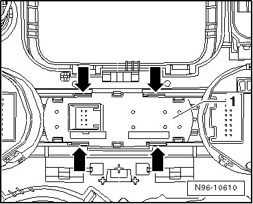

Suspension Adjustment Module
Center Console Lamps and Switches
Suspension Adjustment Module
The suspension adjustment module is located in the center console in the center behind the switch cover. Depending on equipment, the suspension adjustment module contains the following components:
• Dampening adjustment button (E387)
• Level control button (E388)
• Stabilizer Decoupling Button (E484)
• The suspension adjustment module cannot be disassembled further. If there is a defect, the suspension adjustment module must be completely replaced.
• The suspension adjustment control module is removed and installed the same way regardless of equipment versions.
Removing
- Switch off ignition, switch off all electrical consumers and remove ignition key.
- Remove gear selector cover.
- Release retaining tabs - arrows - with a suitable screwdriver and remove suspension adjustment module - 1 - from switch cover.

Installing
Install in reverse order of removal.